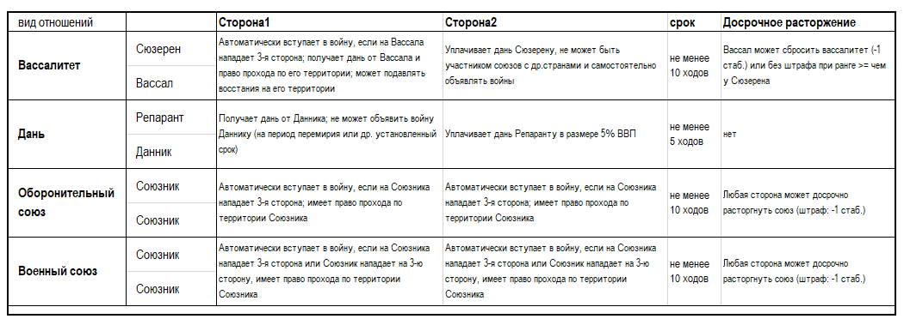
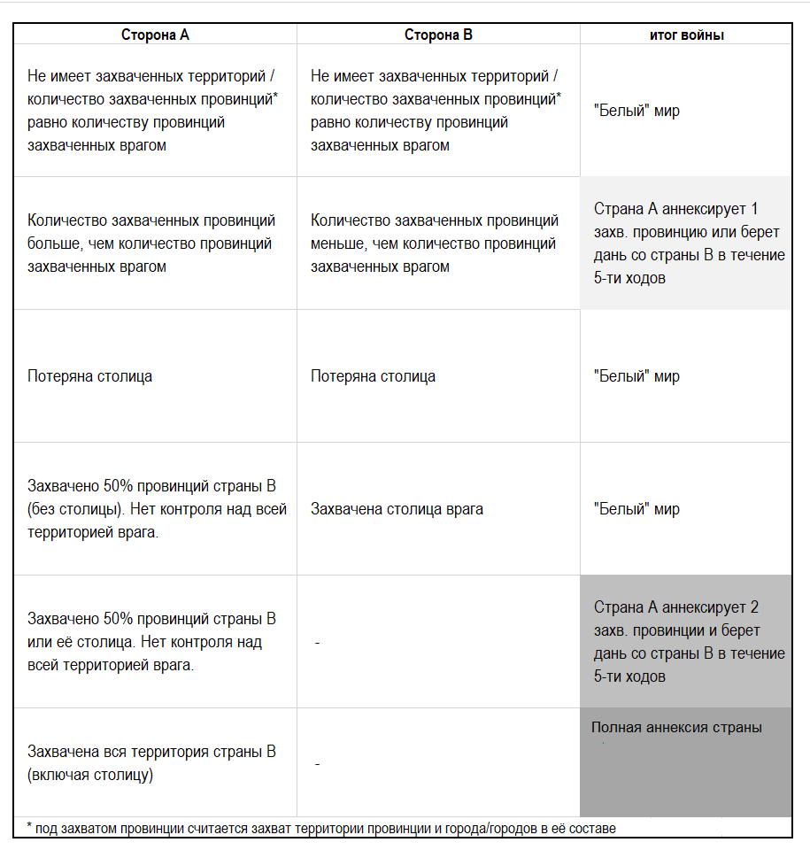

Все доступные в игре виды отношений между странами отражены в их балансах.
Внимание: Общее кол-во разрешенных дипломатических состояний не может превысить 20 (кол-во строк в балансе, фиксирующих дипломатические состояния не может быть больше 20-ти). Игроку следует правильно пользоваться этим ресурсом, продумывая сроки заключения договоров и предлагая своевременные усилия по изменению/расторжению данных договоров и т.п. Если ситуация в игре заставляет Ведущего вписывать обязательное состояние войны с иной страной при недостатке свободных строк в дип. записях, Ведущий вправе вписать «войну» вместо любой иной записи.
Каждая страна может иметь такое число союзов/вассалов, которое указано в её балансе и обычно соответствует дипломатическому рангу. При превышении этого лимита, страна получает ощутимый штраф.
Зависимая страна – находящееся в формальном подчинении от другого государства.
В игре есть две разновидности зависимостей:
1) Сюзерен - Вассал. Это объявление одной страной (выше рангом) обязательств по защите другой страны (рангом ниже). Вассалитет устанавливается по взаимной договоренности на срок не менее 10 ходов. Вассал уплачивает Сюзерену дань, Сюзерен имеет обязательства по защите Вассала, может без договора транзита перемещаться по его территории и участвовать в подавлении восстаний на территории Вассала. Вассал ограничен в международной правосубъектности: не может заключать союзы с другими странами, не может самостоятельно объявлять войны третьим странам. Война, объявленная третьими странами Вассалу, автоматически становится войной Сюзерена. Вассал может участвовать в войнах, начатых Сюзереном на общих основаниях (вступать в эти войны или отказаться от них). В войнах, объявленных в отношении Сюзерена, Вассал вступает автоматически. Фактически, между Вассалом и Сюзереном устанавливаются отношения как при Оборонительном союзе. Вассал может «сбросить» вассалитет в любое время со штрафом -1 к стаб. либо выйти из-под покровительства, если ранг его страны станет равным рангу страны Сюзерена.
2) Репарант – Данник. Устанавливается на срок не менее 5 ходов добровольно или по итогам войны. Репарант не может объявлять Даннику войну до истечения срока отношений. Данник не может досрочно освободиться от дани.
Нельзя добровольно становиться данником/вассалом другого государства, если страна воюет.
Союз – это обязательство помогать союзнику в войне.
Есть два вида союзов – оборонительный и военный (см.в таблице).
Новые союзы не оформляются, если страна находится в состоянии войны.
Союзники автоматически пользуются проходом по территории друг друга без оформления транзитного договора.
Страны могут совершать сделки по уступке друг другу территорий. Продавать или иным образом отчуждать принадлежащую государству провинцию в пользу другого государства можно не более 1 провинции в ход.
При этом соблюдаются следующие правила:
• Уступаемая провинция должна граничить по суше с государством, которому она будет уступлена или находиться не дальше, чем через 1 м/з.* (т.е. провинцию с побережьем, выходящим на берег соседней м/з).
• Если уступаемая провинция обладает культурой страны, которой такая уступка будет совершена, то сделка возможна, при любом отдалении от территории страны-покупателя.
Игроки самостоятельно договариваются о цене сделки.
Если страна находится в состоянии войны, то она не может совершать никаких сделок по приобретению/отчуждению территорий.
• Перемирие. Заключаются на 5 ходов. Договором о мире могут определяться условия о выплате дани, передаче территорий и др.
• Торговый договор. Заключается между торговыми республиками, позволяет получить уникальные товары для перепродажи
• Пакт о ненападении. Обязательство не вести в отношении друг друга наступательных войн.
Для любых видов соглашений основной формой их ратификации является подтверждение в заявке. Если подтверждение в заявке отсутствует, то сторона дезавуирует свое намерение совершить дипломатическую сделку, даже если об этом она заявила публично на форуме/в чате и личной переписке.
Война – состояние противостояния между двумя и более странами, заключающееся в возможном применении против врага вооруженных сил, захвате территории врага, вплоть до его аннексии.
Состояние войны фиксируется в сводке дипломатических отношений.
Союзник, располагающий свои войска на территории страны-союзника для защиты его границ от несанкционированного прохода/ввода войск третьих стран автоматически вступает в войну, если его войска вступили в бой с войсками третьей страны при осуществлении такого прохода/ввода.
Продолжительность войн:
Войны длятся 5 ходов, если ни одна из сторон заявляет о перемирии. Длительность войны определяется по ходу первого акта военных действий. Если к войне присоединились другие страны-союзники, то продолжительность войны не продлевается.
Война длится либо до:
1) Достижения перелома в войне против любой из стран, участвующих в войне;
2) Достижении 5 ходов с момента её начала (т.н. перемирие);
3) Достижении соглашения об окончании войны.
Перелом в войне — если одна сторона (в т.ч. совместно с ее союзниками) захватила более 50% провинций или город-столицу другой страны.
Если перелом достигнут против одной из стран альянса (в т.ч. против вассала сюзерена принимающего участие в войне), то она мирится сепаратно, разрывая тем самым союз. Остальные страны продолжают войну, если не договариваются о мире.
При достижении перелома в войне победитель вправе (или/или):
1) Объявить проигравшее войну государство своим данником. Если контроль над провинциями проигравшей страны осуществляют две и более страны-союзницы, то правом ее подчинения обладает страна, контролирующая столицу противника, либо любой другой участник союза по соглашению между ними.
2) Потребовать территориальных уступок - см. ниже.
Если в ходе войны был захвачен город без провинции, то он не может быть аннексирован. Если аннексированная провинция является столичной, то столица проигравшей страны переносится в другую провинцию/город. Если в войне участвовала коалиция стран, то указанные последствия имеют силу в отношении одной из стран союза по договоренности.
При достижении одной стороной войны перелома, второй стороне предоставляется следующий ход для ответных действий. Только если по итогам след. хода состояние перелома будет сохранено победитель вправе выдвинуть указанные выше требования к проигравшему.
Окончание войны по истечению 5-ти ходов. Если война длится 5 ходов, то любая сторона вправе выдвинуть требование о перемирии.
Если на момент введения перемирия сторона имеет (на основании факта оккупации территории врага) право на аннексию территории врага (см. таблицу), то она вправе заявить об этом. В противном случае война завершается «белым» миром.
Таблица территориальных уступок:
При заключении перемирия стороны обязаны вывести до окончания срока перемирия войска с чужой территории до окончания перемирия. В противном случае они будут принудительно распущены.
Требование о перемирии распространяет свое действие на все страны, входящие в союз, ведущие совместно войну.
Перемирие может быть отменено стороной, чей союзник/вассал был атакован второй стороной перемирия во время его действия.
Посольства открываются с согласия принимающей стороны.
Страна, принявшая у себя посольство другой страны вправе закрыть его в любой момент без объявления причин, в т.ч. при начале войны между данными странами.
Посольства дают +1 кт/о.
Стоимость содержания Посольств зависит от удаленности страны.
Количество доступных стране Посольств ограничено и указано в балансе.
Казус белли – повод для объявления войны одной страной другой без штрафа к стабильности.
Если в числе доступных решений для страны есть «Подделать претензию», то страна может создать КБ против такой страны сроком на 5 ходов (информация о КБ против конкретной страны вносится в сводку дип. состояний страны).
КБ существует автоматически между соседними странами (общая граница или общая м/з), если:
1) Страны исповедуют разные религии;
2) Между странами заключен дин.брак;
3) В отношении стран, напавших на члена Союза или Вассала данной страны.
Если со страной, в отношении которой есть КБ по одному из выше указанных оснований, заключен Пакт о ненападении, то нарушение этого Пакта влечет штраф к стабильности, указанный в балансе.
Например, страна А и В заключили пакт о ненападении, но исповедуют разные религии. Страна А нападает на страну В, имея КБ по пункту о вере, но нарушает пакт, поэтому это влечет штраф -1 к стаб.
Страна А и В заключили пакт о ненападении. У страны В есть страна С, с которой у неё заключен Оборонительный союз. При нападении страны А на страну С, страна В автоматический вступает в войну на стороне С против страны А, но тем самым нарушает пакт, заключенный со страной А.
Страна А и В заключили пакт о ненападении. У страны В есть страна С, которая является вассалом страны В. При нападении страны А на страну С, страна В автоматический вступает в войну на стороне С против страны А, но тем самым нарушает пакт, заключенный со страной А.